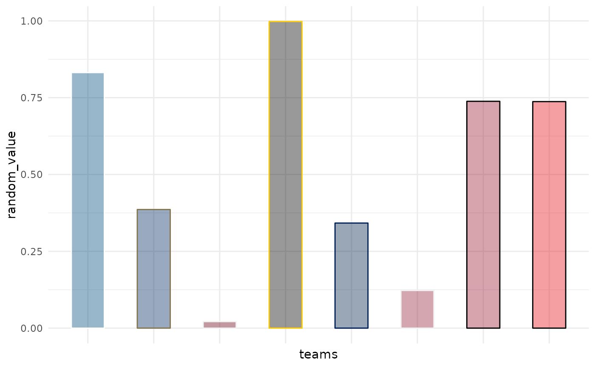
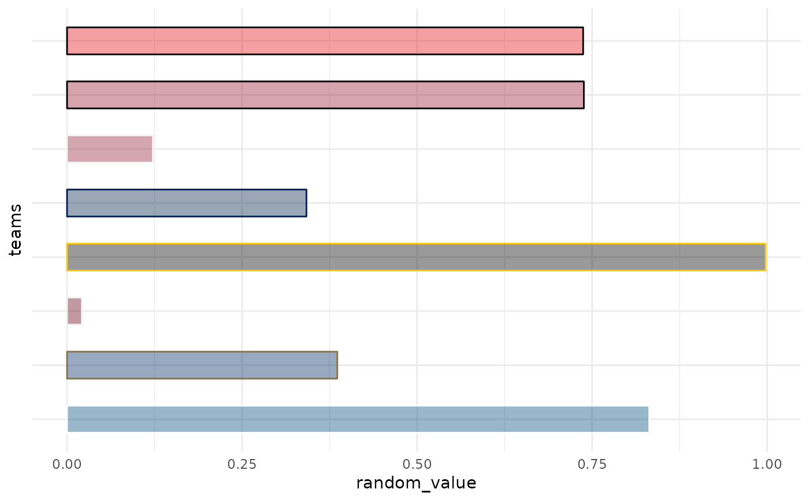
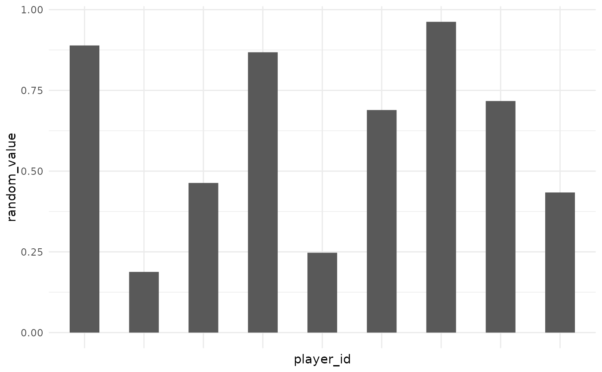

In conjunction with the ggplot2::theme system, the following element_
functions enable images in non-data components of the plot, e.g. axis text.
element_cfb_logo(): draws college team logos instead of their names.element_cfb_wordmark(): draws college team wordmarks instead of their names.element_cfb_headshot(): draws player headshots instead of their ESPN player IDs.element_path(): draws images from valid image URLs instead of the URL.
Usage
element_cfb_logo(
alpha = NULL,
colour = NA,
hjust = NULL,
vjust = NULL,
color = NULL,
size = 0.5
)
element_cfb_wordmark(
alpha = NULL,
colour = NA,
hjust = NULL,
vjust = NULL,
color = NULL,
size = 0.5
)
element_cfb_headshot(
alpha = NULL,
colour = NA,
hjust = NULL,
vjust = NULL,
color = NULL,
size = 0.5
)
element_path(
alpha = NULL,
colour = NA,
hjust = NULL,
vjust = NULL,
color = NULL,
size = 0.5
)
# S3 method for element_cfb_logo
element_grob(
element,
label = "",
x = NULL,
y = NULL,
alpha = NULL,
colour = NULL,
hjust = NULL,
vjust = NULL,
size = NULL,
...
)
# S3 method for element_cfb_wordmark
element_grob(
element,
label = "",
x = NULL,
y = NULL,
alpha = NULL,
colour = NULL,
hjust = 0.5,
vjust = 0.5,
size = NULL,
...
)
# S3 method for element_cfb_headshot
element_grob(
element,
label = "",
x = NULL,
y = NULL,
alpha = NULL,
colour = NULL,
hjust = NULL,
vjust = NULL,
size = NULL,
...
)
# S3 method for element_path
element_grob(
element,
label = "",
x = NULL,
y = NULL,
alpha = NULL,
colour = NULL,
hjust = NULL,
vjust = NULL,
size = NULL,
...
)Arguments
- alpha
The alpha channel, i.e. transparency level, as a numerical value between 0 and 1.
- colour, color
The image will be colorized with this color. Use the special character
"b/w"to set it to black and white. For more information on valid color names in ggplot2 see https://ggplot2.tidyverse.org/articles/ggplot2-specs.html?q=colour#colour-and-fill.- hjust, vjust
The horizontal and vertical adjustment respectively. Must be a numerical value between 0 and 1.
- size
The output grob size in
cm(!).- element
element type
- label
Label
- x
x grid units position
- y
y grid units position
- ...
Other arguments to be passed to underlying ggplot function
Details
The elements translate CFB team names or players' ESPN IDs into logo images or player headshots, respectively.
See also
geom_cfb_logos(), geom_cfb_wordmarks(), geom_cfb_headshots(),
and geom_from_path() for more information on valid team names,
player IDs, and other parameters.
Examples
# \donttest{
library(cfbplotR)
library(ggplot2)
team_abbr <- valid_team_names()
# remove conference logos from this example
team_abbr <- team_abbr[1:8]
df <- data.frame(
random_value = runif(length(team_abbr), 0, 1),
teams = team_abbr
)
# use logos for x-axis
ggplot(df, aes(x = teams, y = random_value)) +
geom_col(aes(color = teams, fill = teams), width = 0.5) +
scale_color_cfb(alt_colors = team_abbr) +
scale_fill_cfb(alpha = 0.4) +
theme_minimal() +
theme(axis.text.x = element_cfb_logo())

# use logos for y-axis
ggplot(df, aes(y = teams, x = random_value)) +
geom_col(aes(color = teams, fill = teams), width = 0.5) +
scale_color_cfb(alt_colors = team_abbr) +
scale_fill_cfb(alpha = 0.4) +
theme_minimal() +
theme(axis.text.y = element_cfb_logo())

#############################################################################
# Headshot Examples
#############################################################################
library(cfbplotR)
library(ggplot2)
# Silence an nflreadr message that is irrelevant here
old <- options(nflreadr.cache_warning = FALSE)
dfh <- data.frame(
random_value = runif(9, 0, 1),
player_id = c("4361182",
"4426385",
"4567048",
"4372519",
"4429013",
"4240069",
"4360932",
"4362874",
"4429299")
)
# use headshots for x-axis
ggplot(dfh, aes(x = player_id, y = random_value)) +
geom_col(width = 0.5) +
theme_minimal() +
theme(axis.text.x = element_cfb_headshot())

# use headshots for y-axis
ggplot(dfh, aes(y = player_id, x = random_value)) +
geom_col(width = 0.5) +
theme_minimal() +
theme(axis.text.y = element_cfb_headshot())
#############################################################################
# Wordmarks and other Images
#############################################################################
library(ggplot2)
df <- dplyr::mutate(mtcars,
team = sample(c("Utah", "Arizona State", "Oregon", "UCLA"), nrow(mtcars), TRUE),
player = sample(
c("4361182", "4426385", "4567048", "4429013"),
nrow(mtcars),
TRUE
)
)
ggplot(df, aes(x = mpg, y = disp)) +
geom_point() +
facet_wrap(vars(team)) +
labs(
title = tools::toTitleCase("These are random teams and data"),
subtitle = "I just want to show how the cfbplotR theme elements work",
caption =
paste0("https://raw.githubusercontent.com/sportsdataverse/sportsdataverse-web/",
"master/public/images/logo.png")
) +
theme_minimal() +
theme(
plot.title.position = "plot",
plot.title = element_text(face = "bold"),
axis.title = element_blank(),
# make wordmarks of team abbreviations
strip.text = element_cfb_wordmark(size = 1),
# load image from url in caption
plot.caption = element_path(hjust = 1, size = 0.4)
)
#> Error in download_url(path): Failed to download https://raw.githubusercontent.com/sportsdataverse/sportsdataverse-web/master/public/images/logo.png (HTTP 404)
# }